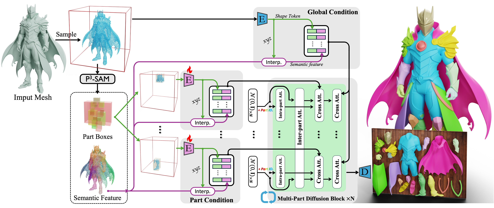
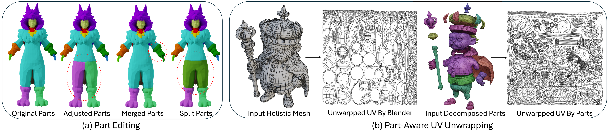

Generating 3D shapes at part level is pivotal for downstream applications such as mesh retopology, UV mapping, and 3D printing. However, existing part-based generation methods often lack sufficient controllability and suffer from poor semantically meaningful decomposition. To this end, we introduce $\mathcal{X}$-Part, a controllable generative model designed to decompose a holistic 3D object into semantically meaningful and structurally coherent parts with high geometric fidelity. $\mathcal{X}$-Part exploits the bounding box as prompts for the part generation and injects point-wise semantic features for meaningful decomposition. Furthermore, we design an editable pipeline for interactive part generation. Extensive experimental results show that $\mathcal{X}$-Part achieves state-of-the-art performance in part-level shape generation. This work establishes a new paradigm for creating production-ready, editable, and structurally sound 3D assets. Codes will be released for public research.

Given input point cloud, per-point feature and part bounding boxes are extracted from P3SAM. Global and part conditions are obtained by stacking geometry token with interpolated semantic features. They are injected to multi-part diffusion process to guide shape decomposition.
@article{yan2025x,
title={X-Part: high fidelity and structure coherent shape decomposition},
author={Yan, Xinhao and Xu, Jiachen and Li, Yang and Ma, Changfeng and Yang, Yunhan and Wang, Chunshi and Zhao, Zibo and
Lai, Zeqiang and Zhao, Yunfei and Chen, Zhuo and others},
journal={arXiv preprint arXiv:2509.08643},
year={2025}
}